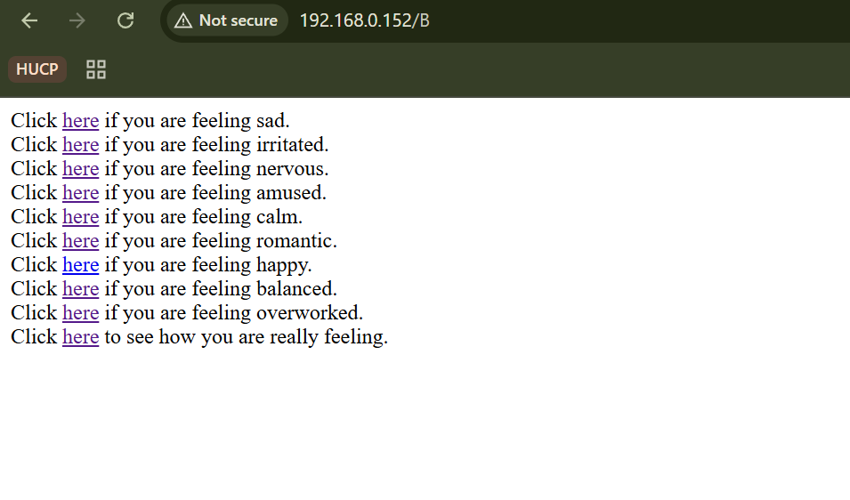
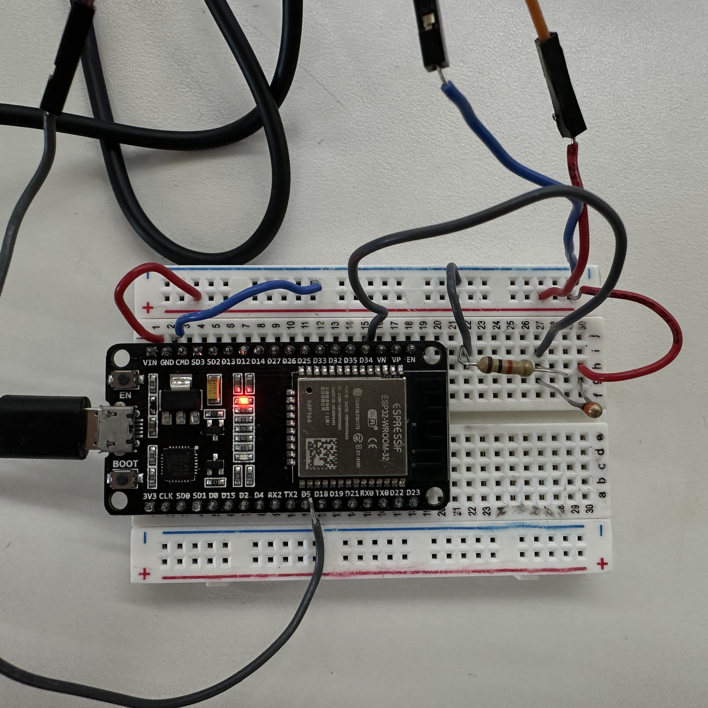
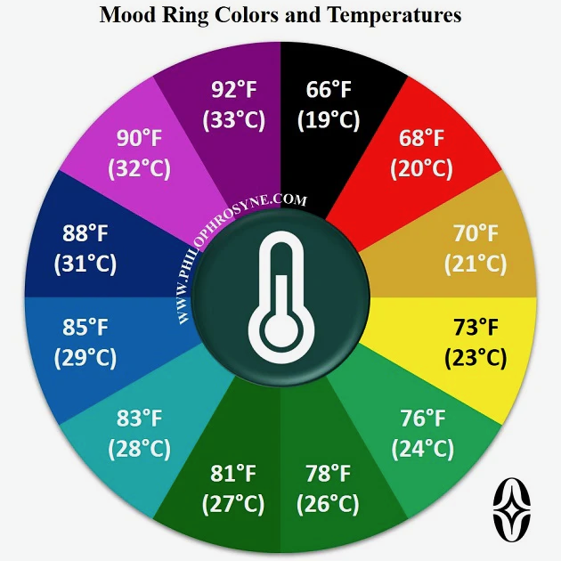

<div class="textcontainer">
<p class="margin"> </p>
<h3>Week 9: Radio, WiFi, Bluetooth (IoT)</h3>
<p class="margin"> </p>
<div class="flexrow">
<a id="btn" href="MoodRing_Files.zip" download>Download my files from this week!
</a>
</div>
<p class="margin"> </p>
<h4>Assignment: [Program something with IOT]</h4>
<h5>This week we learnt about the Internet of Things and different communication technologies. These topics in particular
have application in nearly every single project. Personally, incorporating part of the feedback I received the previous
week at the MVP, I plan to modify my turning signal system for it to use radio or ESP32-ESP32 communication to make
the system wireless. This will make it more practical and easier to install on a bike.
</h5>
<h5>As for the project this week, I partnered with Xander Patton <a href="Xander's Website">https://x-patton.github.io/XPATTON_PS70/09_networking/index.html</a>. We decided to create an 'emotional box'. Originally,
we wanted to create a box that would light up in different colors based on what the user reported thier mood to be on
a website. However, we noticed that we were missing an imput component. Therefore, my partner Xander suggested to
use a temperature sensor since that was really the way that mood rings work. "Ideating on what project we could make out of this, we ultimately landed on creating an
emotion box adjacent to a mood ring. With this idea in mind, we first had to figure out what shape this box should be, and so in the vein of emotions,
we obviously landed on a heart." - Xander Patton
</h5>
<a id="btn" href="HeartBox.dxf" download>Download the laser cut dxf for the box here!
</a>
<img width="640" height="640" src="./Laser Cutout.JPG">
<img width="640" height="640" src="./Assembled Box.JPG">
<h5>
Now that our box was assembled, we had to figure out what interface we would set up to cause the box to actually change colors and "show us how we're feeling".
To do this, we settled on two primary inputs. The first would be button based on our LAN Server. If you are feeling sad, press the button that tells us you are
feeling sad and the box will turn blue (if angry, the box turns red, etc.).
</h5>
<h5> One of the most challenging parts was to be able to run the website because sometimes my computer disconnected
from the WiFi or immediately switched to another netweork. However, after lots of trial and error, asking Kassia for help,
and pushing the Reset button, the website finally capitulated.
</h5>

<a download href="MOODRING.zip" download>Download our code for the entire project!</a>
<h5>And here is how our circuit looked!</h5>

<h5>Initially, I focused on developing the code for the LED strip to fluctuate according to the feelings the
user reported on the website. I used Adafruit's NeoPixel library to control the LED strip. The code was fairly
straightforward since I had experience with LED strips from previous weeks and it became a chain of if statements.
Next, I focused on incorporating the temperature sensor. I used the analogRead function to read the values from the sensor
and mapped those values to a range of colors. Some difficulties were that I had initially misinterpreted the
temperature sensor's range and created if statements with values out of reach. After fixing that, I was able to
get the response I wanted.
</h5>
<h5>
The second input that we settled on exactly mimicked the system used by mood rings. Using a thermistor, we created an input that tracked user temperatures, and then assigned those to a color value, just like the mood ring chart pictured below.
Accompanying this, we added a button labeled "Click here to see how you're really feeling." See this in acion below.
</h5>

<img width="640" height="640" src="./Finished Box Image.JPG">
<video width="640" height="640" controls>
<source src="Working Box.mp4" type="video/mp4">
</video>
<h3>Key Takeaways</h3>
<br/>
<h5>1. Creating a LAN server is straightforward by using the WiFi SimpleWiFi server library</h>
<br/>
<h5>2. Sometimes the websites do not load properly and one of the best things one can do is to push the REset button.
</h5>
<br/>
<h5>3. When working with IoT, all devices ought to be connected to the same network.
</h5>
<br/>
<h5>4. Mood rings are not that mysterious after all; they just use temperature sensors to change colors.
</h5>
</div>